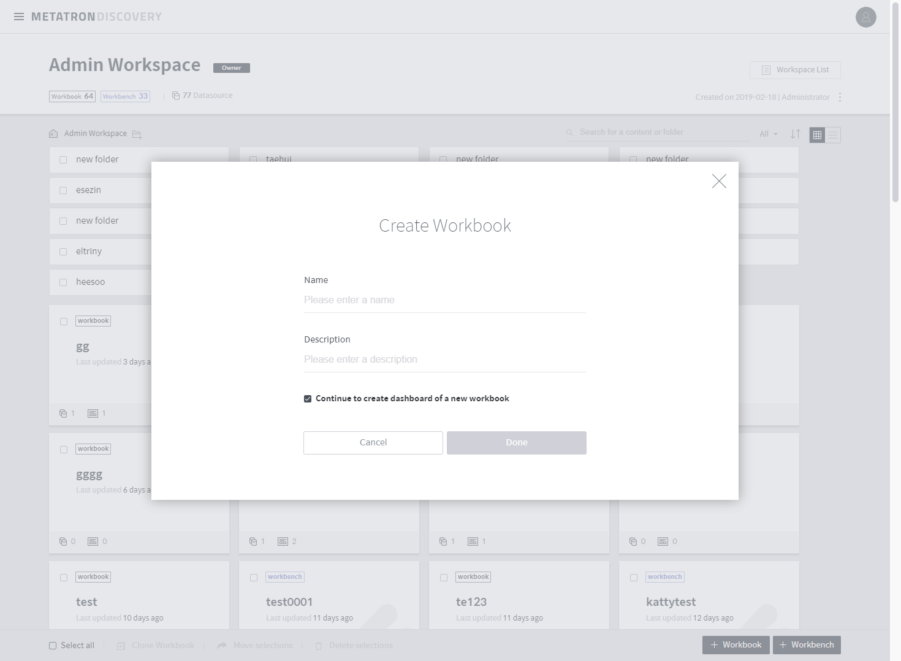
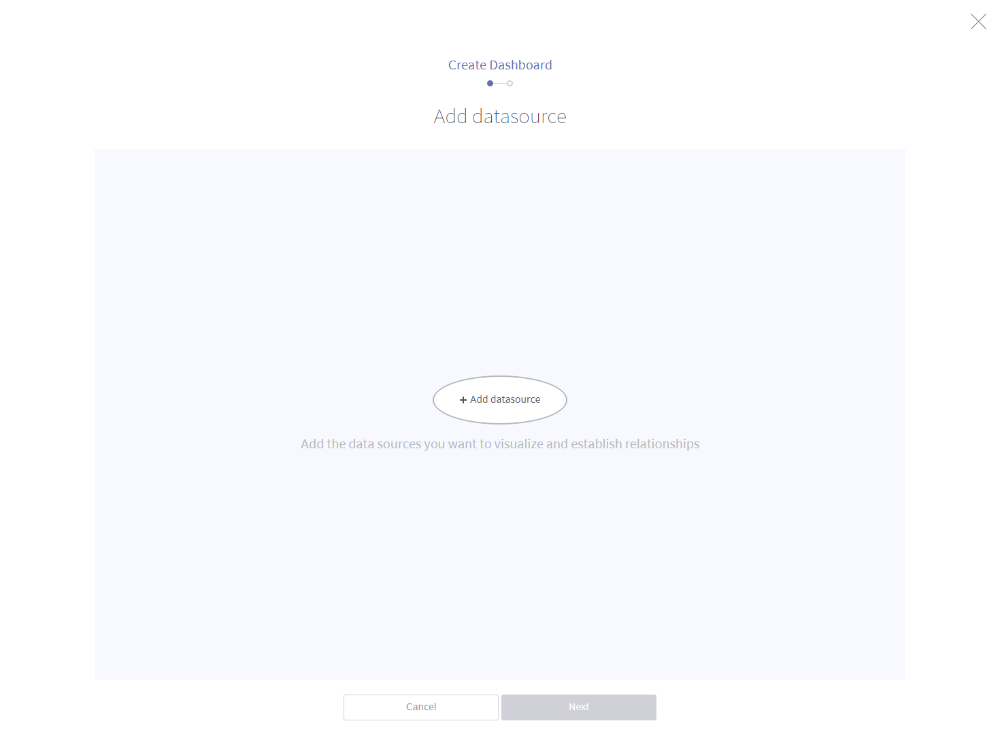
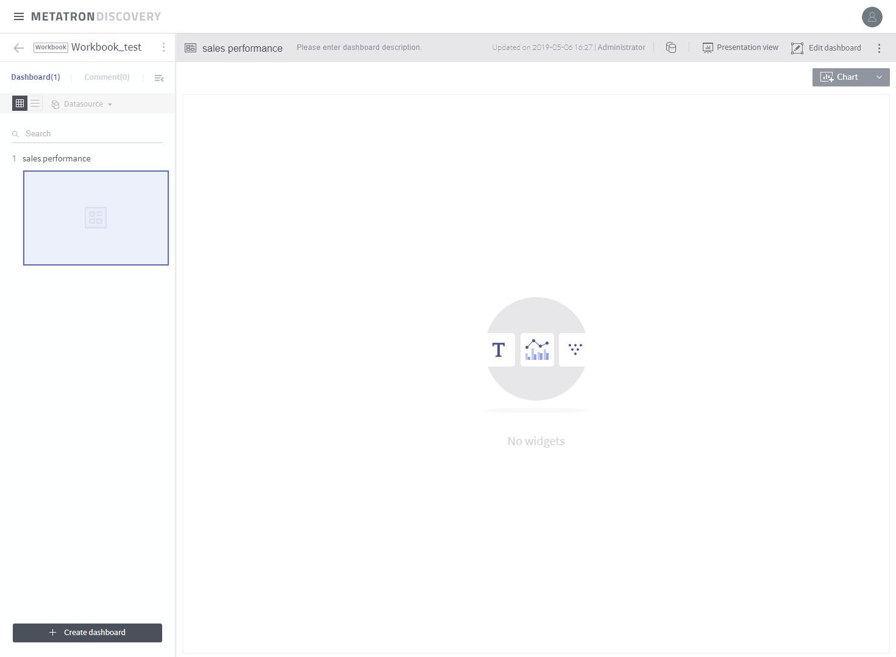

Step 2. Create a workbook¶
Do you have the data ready for analysis? Now, it’s time to create a workbook. The Workbook module supports the visualization of data. Click the Metatron Discovery logo on the upper left to enter your personal workspace.

Let’s begin by clicking the + Workbook button on the bottom right. Enter the name and description for the workbook. The checkbox is marked by default for you to create a dashboard once a workbook is created. A single workbook contains multiple dashboards, and each single dashboard contains multiple charts.

Proceed with creating a dashboard. A dashboard requires a data source for visualization. This data source can be either a single source, or joined data sources. See Create a dashboard for further details. This tutorial uses Sales Report, ingested previously in Step 1.

Click the + Add data source button for the data source selection popup. Search Sales Report, or select the Show open data only checkbox and choose from the results.

Finally, enter the Name and Description for the dashboard.

You have created a dashboard in the workbook. Now, you can add widgets to the dashboard.

Let’s proceed to the next step.